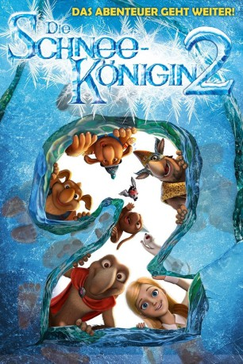

 
 IMDB-Wertung: 6.3 / 10
IMDB-Wertung: 6.3 / 10  Metascore:
Metascore: 
Nachdem die Schneekönigin besiegt ist, haben sich die Wege von Gerda und Orm getrennt. Der Troll lebt nun mit seiner Großmutter in einem kleinen Häuschen in der Trollstadt. Eigentlich hatte er geschworen, nie mehr zu lügen. Aber beim Wettstreit um die Hand der Trollprinzessin kann er der Versuchung nicht widerstehen und schmückt seine Rolle beim Kampf gegen die Schneekönigin gewaltig aus. Vor allem verschweigt er, dass er einst ihr Diener war. Da fällt plötzlich der Nordwind über die Stadt her und entführt die Prinzessin. Die Welt droht wieder in Eis und Kälte zu erstarren. Nun muss Orm beweisen, was wirklich hinter seinen Heldengeschichten steckt …
Jahr: 2014
Dauer: 78 Minuten
FSK:
Land: Russland Studio: Ascot Elite Entertainment GroupTonspuren: DTS - ,
Untertitel: Deutsch,
Auflösung: 1080p (1920x1080) Größe: 5335 MB
Genre: Animation/Trick, Abenteuer, Familie
Regisseur: Aleksey Tsitsilin
Drehbuch: Roman Nepomnyashchiy, Vladimir Nikolaev, Aleksey Tsitsilin, Aleksey Zamyslov
Soundtrack: Mark Willott
Darsteller:
Datei: X:\Kinder Collections\Schneekönigin\Schneekönigin 2, Die (2014, FSK, 1920x1080) 3D.mkv seit 17.11.2015
Festplatte: Kinder-Filme+Trick
 Es gibt insgesamt 9 Filme in der Gruppe 'Kinder Collections\Schneekönigin'
Es gibt insgesamt 9 Filme in der Gruppe 'Kinder Collections\Schneekönigin'